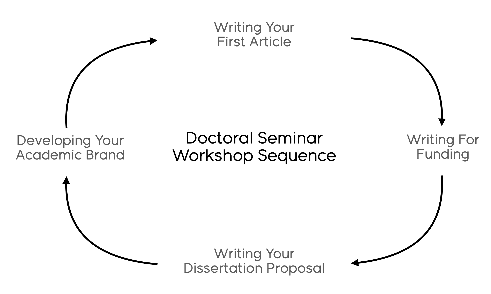

Seminar Information
Course Information
The Doctoral Urban Planning seminar is a platform for the intellectual development for PhD students in the Department of Urban & Regional Planning and part the program’s strategy for building a thriving and successful community of scholars. The seminars facilitate exchange of ideas and perspectives among doctoral students, faculty, and others working to support academic research and practice.
The seminar is designed to support the progress and success of doctoral students who are at different stages in their research and doctoral studies, and provides a shared space for students to present their research and to solicit critical, yet constructive, peer reviews and advice.
Seminar Structure
The Doctoral Urban Planning Seminar is designed to be a collaborative venture between seminar participants and the faculty facilitator. Faculty facilitation focuses on a 4-semester cycle of seminar workshops designed to build skills and perspectives that will support scholarly and research practice. The assumption is that doctoral students will cycle through all for seminar workshops during their pre-candidacy coursework:
 These facilitated “workshop within a seminar” sessions are scheduled for roughly every other week. Seminar participants will work to set the agenda and approach to other sessions, which may include inviting faculty panels and guest speakers to reflect upon their work and experiences, inviting representatives from campus offices to share resources and tools, providing peer feedback on talks and presentations, etc. This shared agenda will be planned during sessions at the beginning and end of each semester.
Resources

For the semester when we workshop writing your first article, please acquire Writing Your Journal Article in Twelve Weeks by Wendy L. Belcher (second edition) from your preferred book retailer.
Participation and Attendance
Like any seminar, our shared success is predicated upon your full participation and engagement.
Participation
The learning environment in this seminar depends upon your participation. Full participation is expected for all course sessions. Participation means not just being physically present, but also actively engaging in our discussions, evaluations, and providing feedback to each other.
Attendance
We will meet on a weekly basis, and you are expected to be present for all sessions. Attendance will be taken and full participation is expected to satisfy seminar requirements. In those cases where it is likely that many seminar participants are not available, we will cancel our session or modify our approach to that session. The overall seminar schedule attempts to account for major conferences and other events for which many students may be away from campus.
Accomodations for Religious Observances
For those students who need to miss class due to a religious observance, please complete the Request for Accommodation for Religious Observances form should any instructors require an absence letter in order to manage the absence. In order to best facilitate planning and communication between students and faculty, we request that students make requests for absence letters as early as possible in the semester in which the request applies.
For more information on attendance policy as described in the University of Illinois Student Code, please see Sections 1-501 and 1-502.
Accomodations for Students with Disabilities
If you need accommodations for any sort of disability, please make an office hours appointment so we can discuss your needs and ways I can support your learning. To ensure that disability-related concerns are properly addressed, students who require assistance to participate in this class should contact Disability Resources and Educational Services (DRES). DRES provides students with academic accommodations, access, and support services. To contact DRES you may visit 1207 S. Oak St., Champaign, call 333-4603 (V/TDD), or e-mail disability@illinois.edu.
Honor Code and Learning Environment
The Illinois Student Code states: “It is the responsibility of each student to refrain from infractions of academic integrity, from conduct that may lead to suspicion of such infractions, and from conduct that aids others in such infractions.” Note that you are subject to the Honor Code, as well as procedures for addressing violations to the Code, regardless of whether you have read it and understand it. According to the Code, “ignorance is no excuse.”
To meet this standard in this class, note the following: in written work, all ideas (as well as data or other information) that are not your own must be cited. Note that ideas that require citation may not have been published or written down anywhere. While you are free—and indeed encouraged—to discuss the assignments with your peers, all of your data collection, analysis, and writing should be your own. Sharing of data sources you have been assigned to collect is a violation of the honor code in this course. The penalty for failing to meet the principles or spirit of the honor code may include automatic failure of the assignment or the class, at the discretion of the instructor.
The Department of Urban and Regional Planning is committed to maintaining a learning environment that is rooted in the goals and responsibilities of professional planners. By enrolling in a class offered by the Department of Urban and Regional Planning, students agree to be responsible for maintaining an atmosphere of mutual respect in all activities, including lectures, discussions, labs, projects, and extracurricular programs. See Student Code Article 1-Student Rights and Responsibilities, Part 1. Student Rights: §1-102.
Health and Safety
Following University policy, all students are required to engage in appropriate behavior to protect the health and safety of the community. If you feel ill, do not come to class. In addition, if you test positive for COVID-19 or have had an exposure that requires testing and/or quarantine, do not attend class. Please notify me, and at my discretion, you will be given excused absences for these class sessions. We will also develop a plan to discuss how to make up any missed work.
Staying in Touch
As you learn and face challenges this semester, I need you to communicate with me, either during our course sessions or individually. You can schedule an appointment with me at your convenience via my Calendly page. I promise to listen, to be a resource, and to help in any way that I can - if I can’t help you, I will find someone who can.
Sexual Misconduct Reporting Obligation
The University of Illinois is committed to combating sexual misconduct. Faculty and staff members are required to report any instances of sexual misconduct to the University’s Title IX and Disability Office. In turn, an individual with the Title IX and Disability Office will provide information about rights and options, including accommodations, support services, the campus disciplinary process, and law enforcement options.
A list of the designated University employees who, as counselors, confidential advisors, and medical professionals, do not have this reporting responsibility and can maintain confidentiality, can be found here. Other information about resources and reporting is available at wecare.illinois.edu.
Mental Health
The University of Illinois offers a variety of confidential services including individual and group counseling, crisis intervention, psychiatric services, and specialized screenings which are covered through the Student Health Fee. If you or someone you know experiences mental health concerns, please contact or visit any of the University’s resources provided below. Getting help is a smart and courageous thing to do for yourself and for those who care about you.
- Counseling Center: (217) 333-3704
- McKinley Health Center: (217) 333-2700
- 988 Suicide and Crisis Lifeline: (800) 273-8255
- Rosecrance Crisis Line (217) 359-4141
If you are in immediate danger, call 911.